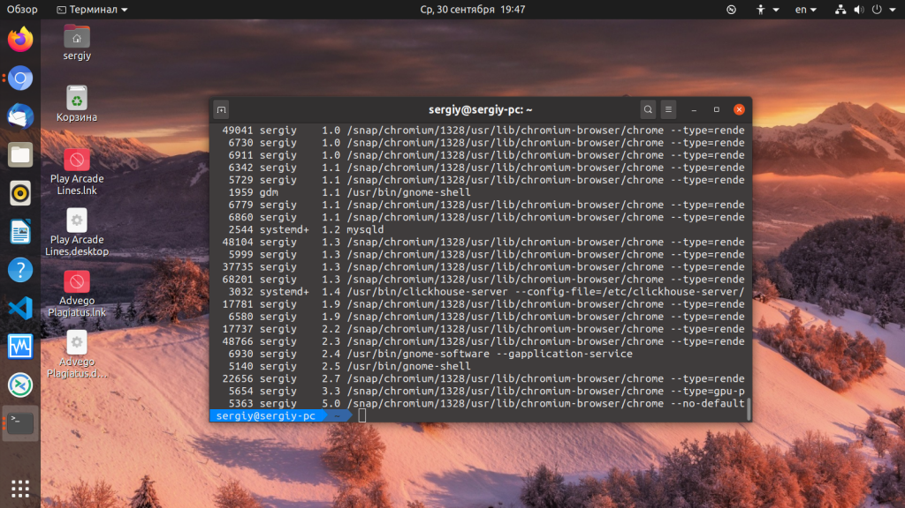

Как освободить память занимаемую процессами
Если в вашей системе нет памяти и кэш здесь ни при чём, следует завершить несколько процессов, потребляющих больше всего памяти. Для этого сначала надо вычислить такие процессы. Чтобы это сделать можно воспользоваться утилитой ps:
ps -e -o pid,user,%mem,command --sort %mem

Как видите, больше всего здесь памяти занимает chromium. Теперь вам надо его завершить. Идентификатор процесса, по которому его можно завершить отображается в первой колонке. Поэтому:
kill -TERM 5363
Более подробно о том как завершить процесс читайте в этой статье. Таким образом, вы можете освободить память от процессов, которые занимают больше всего памяти, а потом уже настроить zram или swap для того, чтобы память не переполнялась.
Вот и все. Вы уже знаете очистить кэш linux и освободить память. Не забудьте, что все команды, приведенные в этой статье нужно выполнять от имени суперпользователя, иначе ничего работать не будет. Если остались вопросы, спрашивайте в комментариях!
Похожие записи: